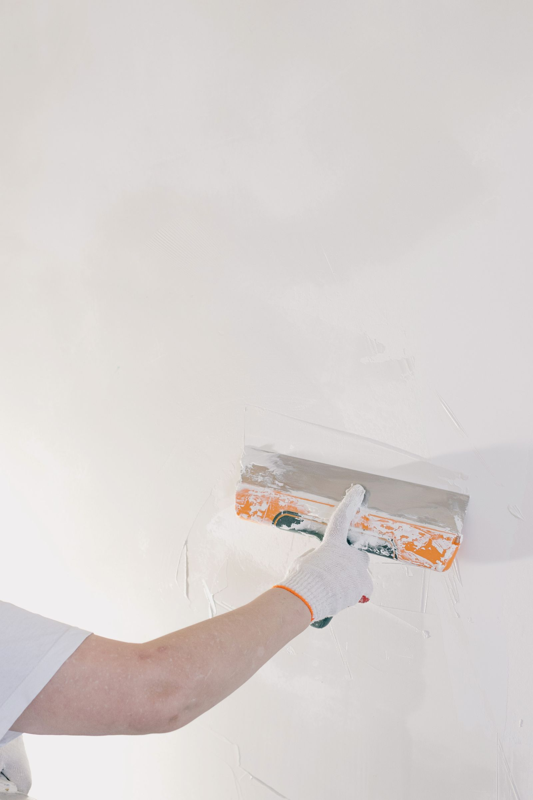
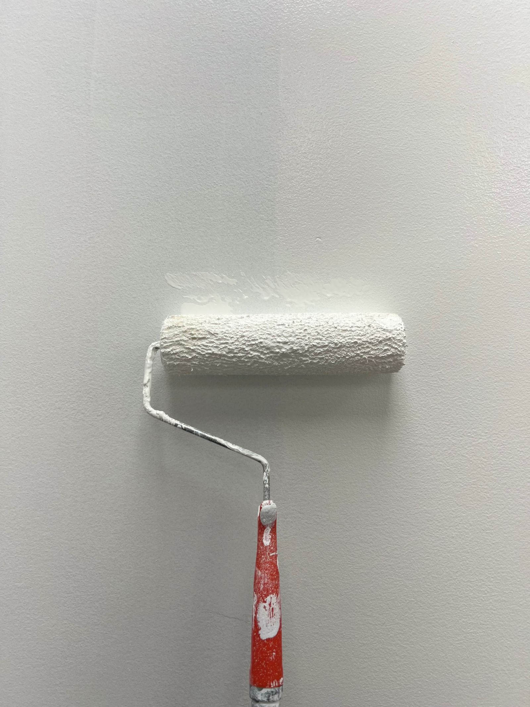
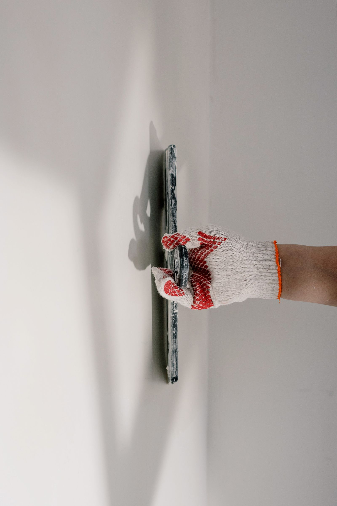
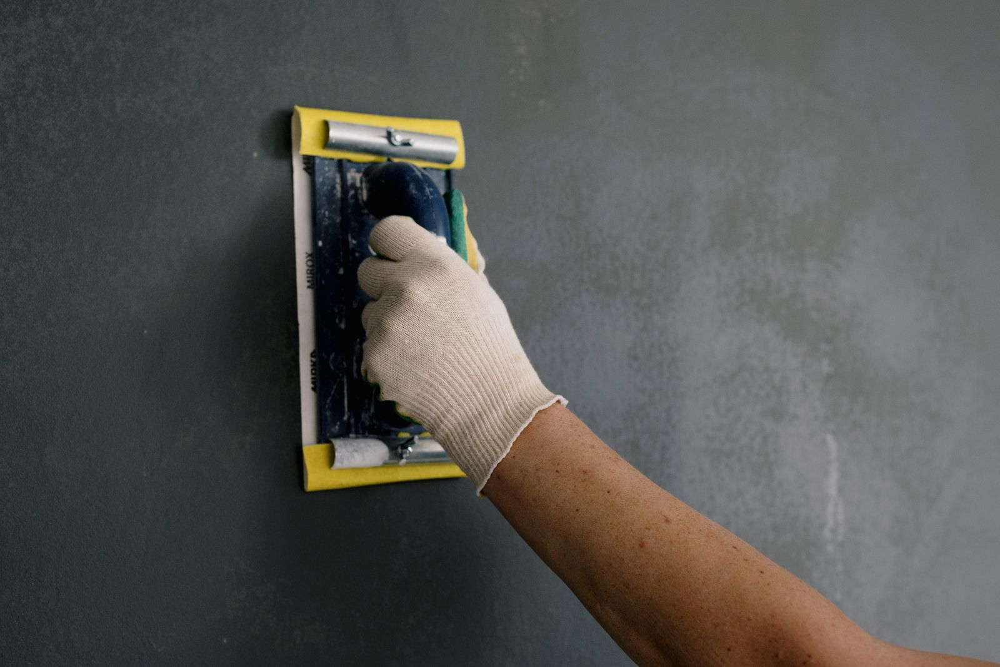

Magyar és angol kommunikáció tulajdonosokkal, kezelőkkel, Airbnb-házigazdákkal és irodai kapcsolattartókkal.
Festés és faljavítás Sopronban
Tiszta, rendezett falak bérbeadás, vendégfogadás vagy átadás előtt.
Beltéri festés, repedésjavítás és glettelés soproni lakásokban – a belvárosi, régi vakolatú házaktól az Airbnb-ingatlanokig, irodákig és kiadásra vagy eladásra készülő otthonokig. Magyar és angol egyeztetés, fotós visszajelzés és szervezett időpontkezelés.

Mire figyelünk?
Felület-előkészítés, tiszta munka, követhető egyeztetés.
Kérés szerint fotók a kiinduló állapotról, a javítási lépésekről és a festés utáni rendezett végeredményről.
Belvárosi lakásokhoz, kiadó ingatlanokhoz, irodákhoz és tipikus soproni faljavítási helyzetekhez igazítva.
Az oldalon szereplő képek illusztrációk, amelyek tipikus munkafolyamatokat és várható eredményeket mutatnak.
01
Milyen festési és faljavítási munkákban segítünk?
A jó végeredmény a fal állapotának felmérésével, a felület előkészítésével és a reális munkatartalom tisztázásával kezdődik. A cél nem látványos ígéret, hanem tiszta, egységes és használatra kész helyiség.
Beltéri festés
Szobák, nappalik, előszobák, irodák és kiadó lakások falainak frissítése egységes, rendezett megjelenéshez.
Repedés- és falhiba javítás
Kisebb repedések, ütésnyomok, tiplik helye, karcolások és bérlőváltás után látható sérülések javítása festés előtt.
Glettelés és felület-előkészítés
Felületi egyenetlenségek, foltok és kisebb vakolathibák előkészítése, hogy a festés tisztább és tartósabb összképet adjon.
Gipszkarton és kisebb javítások
Kisebb gipszkarton-sérülések, élhibák, felületi horpadások és festés előtti praktikus javítások kezelése.
Airbnb és bérlakás frissítés
Vendégváltás, bérlőváltás, fotózás vagy megtekintés előtti falfrissítés, amikor a lakásnak gyorsan rendezett képet kell mutatnia.
Tiszta munkaterület és fotós visszajelzés
A munkát egyeztetett feladatlista alapján végezzük, a fontos állapotokról pedig kérés szerint fotós visszajelzés készül.
02
Mikor érdemes festést vagy faljavítást kérni?
A legtöbb érdeklődés akkor érkezik, amikor egy lakást újra ki kell adni, vendégek érkeznek, irodai látogatás várható, vagy a falak már rontják az ingatlan összképét. Ilyenkor a gyors, tiszta és jól egyeztetett javítás sokat számít.
- Külföldön élő tulajdonosokHa a falak állapotáról fotók alapján kell dönteni, és fontos a távolról követhető egyeztetés.
- Airbnb-házigazdák és lakásbefektetőkFalnyomok, kisebb sérülések, kopott felületek és fotózás előtti gyors, rendezett frissítés esetén.
- Irodák és képviseleti terekHa egy látogatás, átadás vagy napi működés előtt a falaknak tiszta, professzionális képet kell mutatniuk.
- Magánlakások és költözés előtti munkákBeköltözés, eladás, bérbeadás vagy szezonális karbantartás előtt, amikor a helyiségnek friss és gondozott állapotba kell kerülnie.





A képek illusztratív példák: tipikus munkafolyamatokat és várható eredményt mutatnak, nem konkrét elkészült ügyfélmunkák.
03
Lakásfestési folyamat és felület-előkészítés
Soproni lakásoknál a szép festés nem csak a festék felhordásán múlik. Régebbi társasházakban, bérlőváltás után vagy Airbnb-frissítés előtt a fal állapota, a javítási igény, a bútorok helyzete és a felület előkészítése ugyanúgy meghatározza a végeredményt.
Helyiség előkészítése
A munka előtt tisztázni kell, mely falak érintettek, mi mozdítható, mi marad a szobában, és hogyan lehet hozzáférni a javítandó felületekhez. Lakott lakásban, irodában vagy gyors átadás előtt ez különösen fontos.
Bútorok és felületek védelme
A bútorok, padlók, konnektorok, szegélylécek és ajtók védelme segít abban, hogy a festés rendezett körülmények között történjen. Ha sok bútor marad a helyiségben, az befolyásolhatja a hozzáférést és az időigényt.
Repedésjavítás és glettelés
Hajszálrepedések, tiplik helyei, ütésnyomok és kisebb vakolathibák festés előtt javíthatók. Mozgó, visszatérő vagy nedvesedéshez kapcsolódó repedéseknél először az okot kell reálisan tisztázni.
Kisebb fal- és gipszkarton sérülések
Kiadó lakásoknál gyakori a bútorok, vendégek vagy költözés okozta horpadás, karc és élhiba. Sok esetben a kisebb javítások és a festés együtt adnak igazán rendezett eredményt.
Beázásnyomok előkészítése
Beázásnyomnál nem elég egyszerűen ráfesteni a foltra. Először azt kell látni, megszűnt-e a kiváltó ok, mennyire száraz a felület, és milyen előkészítés szükséges a festés előtt.
Szín- és festékválasztás
Bérlakásoknál és Airbnb-lakásoknál többnyire a tiszta, természetes, könnyen újrafesthető árnyalatok működnek jól. Erős szín, többféle árnyalat vagy dekorfal esetén több előkészítésre és pontosabb egyeztetésre lehet szükség.
04
Mi befolyásolja az ajánlatot és a munka időtartamát?
Nem adunk látatlanban fix árat, mert egy soproni lakás festési igénye a mérettől, a falak állapotától, a javítási mennyiségtől, a színek számától, a bútoroktól és a hozzáféréstől függ. A cél egy reális, követhető munkatartalom, nem hangzatos ígéret.
Lakásméret és helyiségek száma
Más munkamenetet igényel egy kisebb szoba javítófestése, egy teljes lakás újrafestése vagy több helyiség eltérő színekkel. A mennyezet, belmagasság és hozzáférés is számít.
Falállapot és javítási komplexitás
A kisebb karcolások gyorsabban kezelhetők, míg repedések, leváló vakolat, beázásnyom vagy sok tiplihely több előkészítést igényelhet. Ezért hasznosak az első WhatsApp-fotók.
Színek, anyagok és fedés
Sötét fal világosra festése, erős színek, eltérő falfelületek vagy foltos alap több réteget és gondosabb előkészítést igényelhet. A festékválasztásnál a használatot és a várható igénybevételt is érdemes figyelembe venni.
Mit tartalmazhat a munka?
A festési munka tartalmazhat felületvédelmet, kisebb falhibák javítását, glettelést, csiszolást, alapozást, festést, fotós visszajelzést és a munka utáni alapvető rendbetételt. Nagyobb lakásnál ez kapcsolódhat ingatlan-karbantartási feladatlistához is.
Mi nem tartozik automatikusan bele?
Nem tartozik automatikusan bele a rejtett beázási ok megszüntetése, villanyszerelés, statikai javítás, teljes felújítás vagy engedélyköteles szakmunka. Ilyen esetekben külön felmérés vagy szakági egyeztetés szükséges.
Takarítás festés után
A munka utáni alapvető rendbetétel része lehet a folyamatnak, de mélyebb átadás előtti takarítást külön érdemes egyeztetni. Bérbeadás vagy vendégérkezés előtt a takarítás és az Airbnb karbantartás is kapcsolódhat a festéshez.
05
Hogyan működik a folyamat?
A festési és faljavítási munkák pontosításához általában elegendő néhány jó fotó, rövid leírás és a helyszín vagy környék megadása. Rejtett vagy nagyobb hibáknál helyszíni felmérés lehet indokolt.
Fotók és cél
Küldje el a falhibákról, helyiségekről és a kívánt eredményről készült fotókat, valamint az időzítést.
Feladatlista
Tisztázzuk, mi javítható fotók alapján, milyen előkészítés szükséges, és hol kell pontosabb helyszíni egyeztetés.
Rendezett munkavégzés
A javítás, glettelés és festés az egyeztetett munkatartalom szerint halad, a helyiség használhatóságára figyelve.
Fotós visszajelzés
Kérés szerint fotókkal jelezzük a fontos lépéseket és az elkészült, rendezett állapotot.
06
Miért a Sopron Property Services?
Soproni ingatlanoknál a festés és faljavítás gyakran időzítésen, hozzáférésen és tiszta egyeztetésen múlik. Ebben adunk praktikus, követhető segítséget.
Reális feladatkezelés
A fal állapotát és a kívánt célt együtt nézzük: elég-e javítófestés, vagy teljes helyiségfestés szükséges.
Magyar és angol egyeztetés
Tulajdonosokkal, kezelőkkel, vendéglátókkal és irodai kapcsolattartókkal is érthetően lehet egyeztetni.
Soproni fókusz
Kiadó lakások, belvárosi ingatlanok, irodák és otthonok hétköznapi festési-faljavítási igényeire szabva.
07
Gyakori kérdések a festésről és faljavításról
Gyakorlati válaszok tulajdonosoknak, Airbnb-házigazdáknak, kezelőknek és irodai kapcsolattartóknak.
Vállalnak kisebb javítófestést is?
Igen, ha a fal állapota és a meglévő festék ezt lehetővé teszi. Fotók alapján gyakran előre látszik, hogy javítófestésről vagy teljesebb falfelület-frissítésről érdemes beszélni.
Javíthatók a repedések és kisebb sérülések festés előtt?
Igen, kisebb repedések, ütésnyomok, tiplik helye és felületi sérülések javításában lehet egyeztetni. Nagyobb, mozgó vagy beázással kapcsolatos hibáknál először az okot kell tisztázni.
Airbnb-lakásnál mennyire gyorsan lehet falfrissítést szervezni?
Ez a kapacitástól, a lakás méretétől, a száradási időtől és a hozzáféréstől függ. Rövid határidőnél érdemes az első üzenetben jelezni a vendégérkezés vagy fotózás pontos időpontját.
Elég fotót küldeni az ajánlatkéréshez?
Sok kisebb festési és faljavítási feladatnál a fotók jó kiindulást adnak. Összetettebb, nedvesedéses vagy nagy felületű munkáknál helyszíni felmérés lehet szükséges a pontos döntéshez.
Dolgoznak külföldön élő tulajdonosokkal?
Igen. A hozzáférés, a feladatlista, az időzítés és a fotós visszajelzés távolról is egyeztethető, ha van rendezett bejutási lehetőség.
Milyen helyiségek festésében tudnak segíteni?
Lakószobák, hálók, előszobák, kisebb irodák, bérlakások és vendégfogadásra használt terek festéséről lehet egyeztetni. A vállalhatóságot mindig a méret, állapot és időzítés alapján erősítjük meg.
Mi történik, ha festés közben új hiba derül ki?
Ha új, a korábbi fotókon nem látható hiba kerül elő, azt külön jelezzük és egyeztetjük. A munkatartalom nem változik automatikusan, csak tisztázott következő lépés után.
Kérhető fotós visszajelzés a munkáról?
Igen, kérés szerint küldhető fotó a kiinduló állapotról, a fontos javítási lépésekről és a kész helyiségről. Ez különösen hasznos távol lévő tulajdonosoknál és ingatlankezelőknél.
Vállalnak irodai vagy képviseleti terek frissítését?
Igen, kisebb irodák, tárgyalók, fogadóterek és látható falhibák frissítésében lehet egyeztetni. Ilyenkor az időzítés és a működés közbeni hozzáférés különösen fontos.
Hogyan induljon az ajánlatkérés?
Küldjön néhány fotót, a soproni címet vagy környéket, a kívánt határidőt, és írja le röviden, hogy javítást, javítófestést vagy teljesebb festést szeretne. Így gyorsabban tisztázható a következő ésszerű lépés.
Mitől függ a festés végső ára?
A végső ajánlatot főleg a lakás vagy szoba mérete, a falak állapota, a javítási mennyiség, a színek száma, a bútorok mozgatása, az anyagigény és a hozzáférés befolyásolja. Ezért érdemes fotókkal és rövid leírással kezdeni.
Mennyi ideig tart egy szoba vagy lakás festése?
Az időtartam a felület méretétől, a javításoktól, a száradási időtől, a rétegek számától és attól függ, mennyire hozzáférhető a helyiség. Egy kisebb javítófestés és egy teljes lakásfestés teljesen eltérő ütemezést igényelhet.
El kell pakolni a bútorokat festés előtt?
A hozzáférést mindenképpen biztosítani kell. Ha sok bútor, személyes tárgy vagy irodatechnika marad a helyiségben, azt előre egyeztetni kell, mert befolyásolja a védelem, a munkatempó és a kivitelezés módját.
Lehet beázásnyomot vagy foltos falat festeni?
Lehet róla egyeztetni, de először tisztázni kell, hogy a kiváltó ok megszűnt-e és a fal megfelelően száraz-e. Ha az ok aktív, a sima átfestés nem reális megoldás, mert a folt vagy sérülés visszatérhet.
Segítenek festék- vagy színválasztásban?
Igen, gyakorlati szempontok alapján lehet egyeztetni: bérlakásnál, Airbnb-lakásnál és irodánál általában a tiszta, visszafogott, könnyen karbantartható színek működnek legjobban. Erős színeknél a fedés és a későbbi javíthatóság is számít.
Mi tartozik bele, és mi nem?
A megbeszélt munkatartalom tartalmazhat felületvédelmet, kisebb javításokat, glettelést, csiszolást, festést és alapvető rendbetételt. Nem tartalmaz automatikusan rejtett beázási okok megszüntetését, villanyszerelést, statikai javítást vagy teljes felújítást.
Következő lépés
Küldjön fotókat a falakról, és egyeztessük a javítás vagy festés reális menetét.
A legjobb kezdés: 2-3 fotó a hibákról és a helyiségről, a soproni cím vagy környék, a kívánt határidő és a hozzáférés módja. Válaszban segítünk tisztázni, hogy fotók alapján elindítható-e a feladat, vagy előbb helyszíni felmérés kell.
FalfotókCím vagy környékHatáridőHozzáférés
+36 20 667 1832
Fotók küldése WhatsAppon
Telefonszám másolása
Gipszkarton és ingatlankarbantartás
Ezermester oldal
Takarítás festés után
Airbnb karbantartás
Külföldi tulajdonosok támogatása
Vissza a főoldalra
Elsődleges terület: Sopron és közvetlen környéke. Magyar és angol egyeztetés.